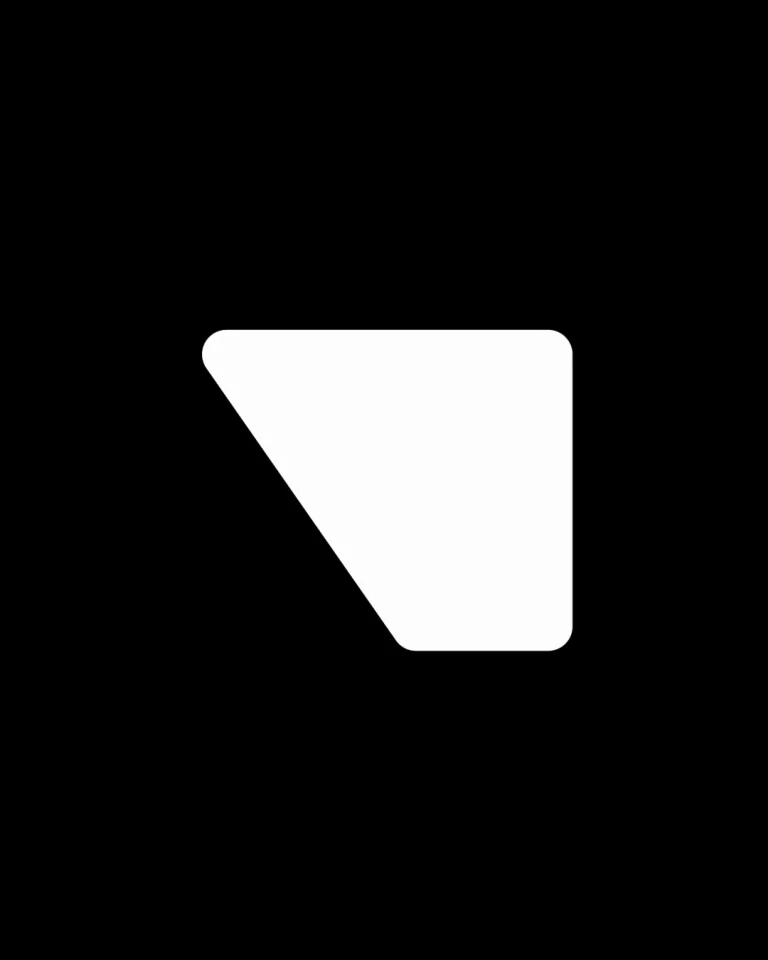
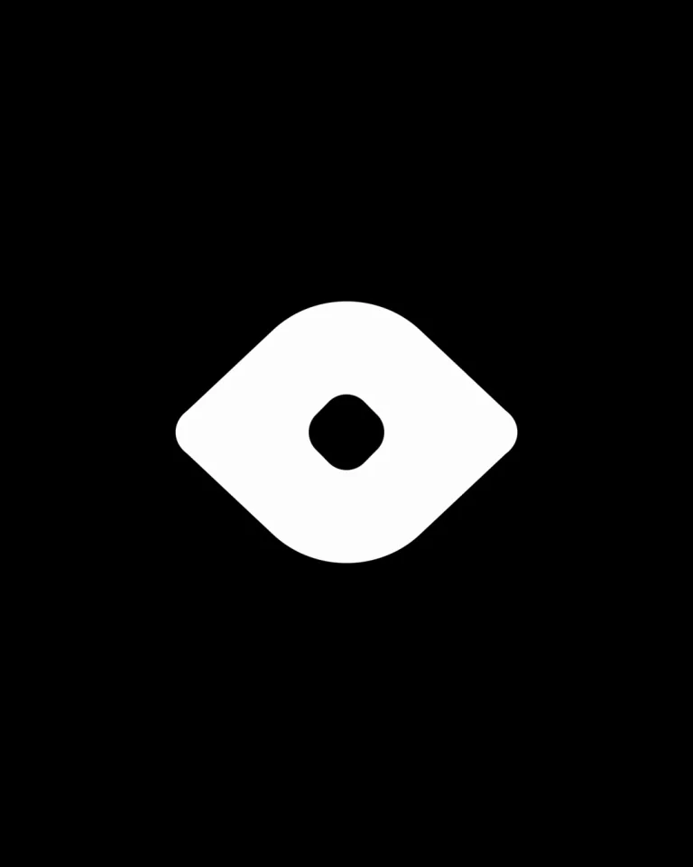
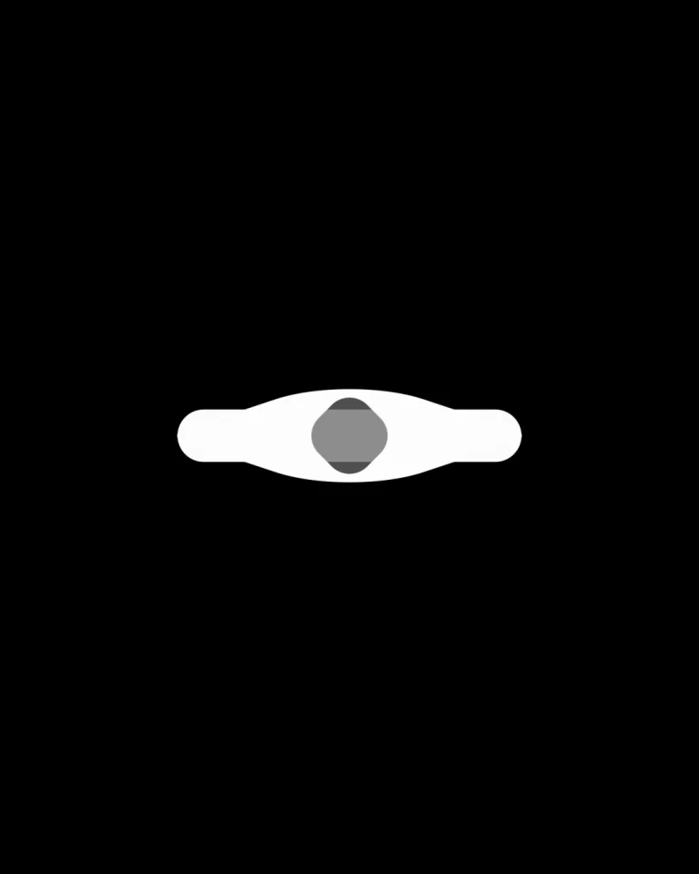

Modyfi / V362
图标动效 · 10.3 秒
围绕同一个中心把符号连续改形，靠凹口、孔洞和分块改变含义，而不是让不同图标逐个淡入。
构图与编排 可播放 · 可替换内容
整体编排规则示例
查看 HTML 源码
<!doctype html><html lang="zh-CN"><meta charset="utf-8"><meta name="viewport" content="width=device-width,initial-scale=1"><title>图标动效 · 10.3 秒 · sequence</title><style>html,body{margin:0;width:100%;height:100%;overflow:hidden;background:#000000}canvas{display:block;width:100%;height:100%;object-fit:contain}</style><body data-mode="sequence"><canvas width="1000" height="600"></canvas><script src="data.js"></script><script src="common.js"></script><script src="scene.js"></script><script src="bridge.js"></script></body></html>画面元素连续外轮廓凹口眼形孔洞地球分块
MOTION LANGUAGE
动作与构图
局部动作 · 构图规则
01
形变前后保留重心
形变前后保留重心规则示例
查看 HTML 源码
<!doctype html><html lang="zh-CN"><meta charset="utf-8"><meta name="viewport" content="width=device-width,initial-scale=1"><title>图标动效 · 10.3 秒 · sequence</title><style>html,body{margin:0;width:100%;height:100%;overflow:hidden;background:#000000}canvas{display:block;width:100%;height:100%;object-fit:contain}</style><body data-mode="clip" data-start="1.7" data-end="4.8"><canvas width="1000" height="600"></canvas><script src="data.js"></script><script src="common.js"></script><script src="scene.js"></script><script src="bridge.js"></script></body></html>闪电、折角和对话形使用相近面积。先移动外轮廓的转折点，再让新形状短暂停留；圆角半径保持相近，避免中途出现尖锐毛刺。
02
孔洞与分块有独立动作
眼形先压扁再张开，中心孔跟随高度变化；转到地球后，白色区域之间用黑色间隙区分经纬块。全程黑底白形，新符号也应有清楚的剪影。
03
迁移时按轮廓相近程度排序
选择相邻形状可以共享转折点的符号，提前决定中心孔何时出现、何时闭合。最多保留五至六种形状，给每个符号一个能辨认的停顿。
SEQUENCE
段落与节奏
点击段落，定位到上方编排示意。



画面参考 · 离散静帧
KEEP THE RELATIONSHIPS
制作其他主题
- 替换同面积的符号序列；保留重心、圆角与负空间的连续变化。
制作约束
连续外轮廓 / 凹口 / 眼形孔洞 / 地球分块
- 闪电、折角和对话形使用相近面积。先移动外轮廓的转折点，再让新形状短暂停留；圆角半径保持相近，避免中途出现尖锐毛刺。
- 眼形先压扁再张开，中心孔跟随高度变化；转到地球后，白色区域之间用黑色间隙区分经纬块。全程黑底白形，新符号也应有清楚的剪影。
- 选择相邻形状可以共享转折点的符号，提前决定中心孔何时出现、何时闭合。最多保留五至六种形状，给每个符号一个能辨认的停顿。